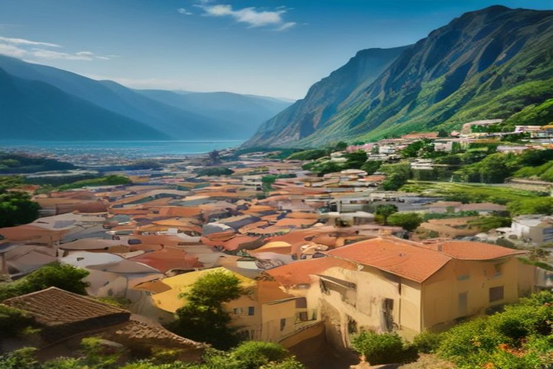
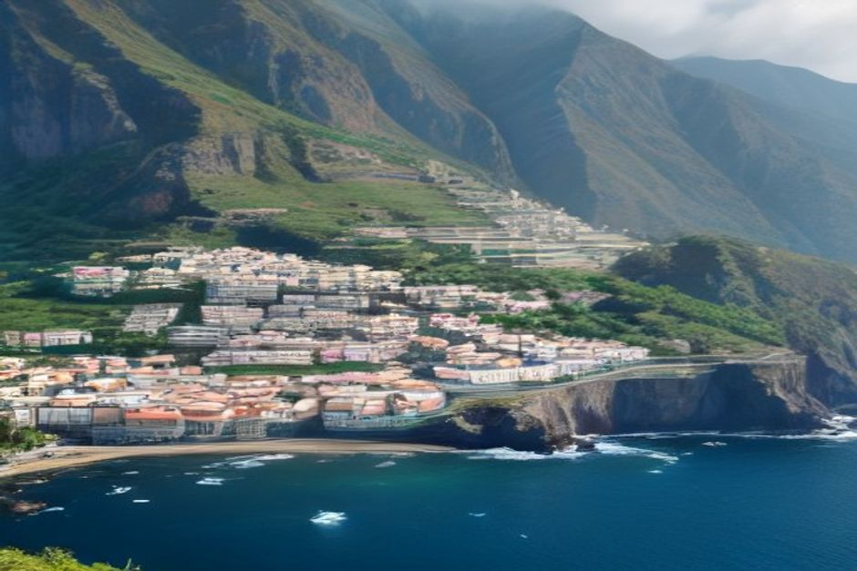

Funchal haben die meisten Reisenden schnell abgehakt. Die Frage ist danach: Welche Orte auf Madeira lohnen den Weg wirklich? Hier sind zehn, bewertet danach, was sie tatsächlich bieten, nicht danach, wie gut sie sich fotografieren lassen: von Santana mit seinen Strohhäusern über Porto Moniz und Ponta do Sol bis zum Nonnental.
Welche Sehenswürdigkeiten auf Madeira passen zu Ihrer Reise?
Madeira ist klein, aber die Wege sind lang. Die Straßen folgen Hängen, Schluchten und Tunneln, und ein Ort, der auf der Karte nah wirkt, kann eine gute Fahrstunde entfernt sein. Planen Sie deshalb nicht nach Kilometern, sondern nach Küsten.
- Südküste: Câmara de Lobos, Ribeira Brava, Ponta do Sol und Calheta. Sie sind von Funchal aus am schnellsten erreicht.
- Nordküste: Porto Moniz, São Vicente, Seixal und Santana. Hier sind die Fahrzeiten länger, dafür ist die Landschaft grüner und wilder.
- Berge und Osten: das Nonnental (Curral das Freiras) im Krater, Machico nahe dem Flughafen.
Drei bis vier Orte an einem Tag sind realistisch. Wer mehr hineinpackt, sieht am Ende vor allem Parkplätze. Und noch ein Hinweis: Die drei Orte der Südküste, die zugleich am dichtesten beieinander liegen, können Sie auch vom Meer aus besuchen. Dazu mehr am Ende.
1. Câmara de Lobos: das Fischerdorf, das Churchill malte
Câmara de Lobos ist Madeiras fotogenster Arbeitshafen: schwarzer Vulkansand, gestapelte Fischerhäuser und die Espada-Boote, die noch immer nachts zum Fang des Schwarzen Degenfischs auslaufen. Winston Churchill malte hier 1950 die Steilküste, und der nach ihm benannte Miradouro zeigt bis heute denselben Blick.
Der Ort liegt gleich westlich von Funchal und gehört auf jede Liste der Madeira Sehenswürdigkeiten. Er ist außerdem der erste Halt von Chifbays privatem Day Trip, nur zehn Minuten über See von der Marina entfernt.

2. Ribeira Brava: das Dorf mit richtigem Badestrand
Ribeira Brava liegt dort, wo ein Fluss auf das Meer trifft. Der Kieselstrand ist ruhig genug zum Schwimmen, und die Kirche São Bento aus dem 16. Jahrhundert fällt mit ihrer pyramidenförmigen Kachelkuppel auf.
Der Ort liegt etwa auf halber Strecke der Südküstenstraße und eignet sich gut für eine Pause mit Mittagessen am Wasser.
3. Ponta do Sol: das sonnigste Dorf der Insel
Ponta do Sol verzeichnet die meisten Sonnenstunden ganz Madeiras. Deshalb hat sich der Ort zu einem kleinen Treffpunkt für Menschen entwickelt, die von der Insel aus arbeiten. Ein kurzer Pier, eine schwarze Sandbucht und eine Handvoll guter Cafés machen ihn auch dann zu einem Stopp, wenn Sie nicht übernachten. Eine Stunde reicht.
Wer Ponta do Sol vom Wasser aus sehen möchte: Es ist der am weitesten entfernte Punkt auf Chifbays erweitertem Day Trip von 3 Stunden.
4. Porto Moniz: zum Schwimmen, nicht für Sand
Porto Moniz hat gar keinen Strand. Stattdessen füllt der Atlantik natürliche Vulkanbecken, die aus dem Lavagestein geformt sind, und genau deshalb kommt man her. Der Ort liegt an der nordwestlichen Spitze der Insel, etwa anderthalb Stunden von Funchal über die Küstenstraße.
Die Becken sind am frühen Nachmittag am belebtesten und am wärmsten. Wer Ruhe sucht, plant das ein. Für Familien mit Kindern ist Porto Moniz ein guter Grund, den Nordwesten als eigenen Ausflugstag anzusetzen.
5. São Vicente: Höhlen in einer grünen Schlucht
São Vicente lohnt den Stopp wegen der Grutas de São Vicente, Lavaröhren, die bei einem Ausbruch vor rund 890.000 Jahren entstanden. Dazu kommt die Schluchtlandschaft selbst: steil, grün und deutlich enger als die Südküste.
Wer die gesamte Nordküste an einem Tag befährt, findet hier den natürlichen Mittelpunkt.
6. Santana: die strohgedeckten Giebelhäuser
Wer nach „Santana Madeira“ sucht, will meist die Palheiros sehen: dreieckige, strohgedeckte Häuser mit leuchtend bemalten Türen, die noch bis vor wenigen Jahrzehnten tatsächlich bewohnt waren. Eine Handvoll ist als kleines Freilichtmuseum am Dorfrand erhalten.
Die umliegende Gemeinde feiert jeden September die Festa do Faial, eines der ältesten religiösen Feste der Nordküste. Wer im September reist, kann das mit dem Besuch verbinden.
7. Das Nonnental (Curral das Freiras): ein Dorf im Vulkankrater
Das Nonnental, auf Portugiesisch Curral das Freiras, liegt am Grund einer eingestürzten Vulkancaldera. Sie erreichen es über eine Straße, die durch den Berg tunnelt, und über den Aussichtspunkt Eira do Serrado, der das gesamte Tal von oben einrahmt.
Der Name erinnert an Nonnen eines Klosters aus Funchal, die im 16. Jahrhundert hierher flohen, um Piratenüberfällen zu entkommen. Kastanien, die an den Hängen über dem Dorf wachsen, tauchen in fast allem auf, von der Suppe bis zum Likör. Probieren Sie, was die Karte hergibt.
8. Machico: wo Madeiras erste Siedler landeten
In Machico ging die Expedition von João Gonçalves Zarco 1419 an Land. Damit ist es der älteste besiedelte Punkt der Insel. Heute hat der Ort einen von Madeiras wenigen Sandstränden, gesäumt von einer Promenade und einer kleinen Festung.
Machico liegt nur fünf Minuten vom Flughafen entfernt und ist deshalb ein natürlicher erster oder letzter Halt Ihrer Reise.
9. Calheta: der Strand aus importiertem Sand
Calheta hat goldenen Sand aus Marokko importiert, um den Strand zu bauen, den der größte Teil der Küste Madeiras von Natur aus nicht bietet. Er bildet heute den Kern einer kleinen Marina und des modernen Kulturzentrums Casa das Mudas.
Calheta liegt im äußersten Westen der Südküste, fast eine Stunde von Funchal entfernt. Das macht es eher zu einem Tagesausflug als zu einem kurzen Stopp.
10. Seixal: die ruhigsten Naturbecken der Nordküste
Seixal hat die ruhigsten, am wenigsten überlaufenen Naturbecken der Nordküste. Sie sind geschützt genug, um auch bei Bedingungen zu schwimmen, die in Porto Moniz meist zum Schließen führen. Bananenterrassen ziehen sich direkt hinter dem Dorf den Hang hinauf, und der Wasserfall Véu da Noiva stürzt kurz davor auf die Küstenstraße.

Die Dörfer im Vergleich: wofür fahren Sie hin?
- Zum Schwimmen: Porto Moniz und Seixal (Naturbecken), Ribeira Brava (Kieselstrand), Machico und Calheta (Sandstrand).
- Für Fotos und Atmosphäre: Câmara de Lobos und Santana.
- Für Landschaft: das Nonnental und São Vicente.
- Für einen entspannten Stopp mit Café: Ponta do Sol.
- Für Geschichte: Machico.
Die Südküste vom Wasser aus: Câmara de Lobos, Ribeira Brava, Ponta do Sol
Nord- und Ostküste erreichen Sie nur über die Straße. Die Südküste dagegen lässt sich auch ohne Serpentinen erleben. Chifbay ist ein privates Bootsunternehmen in Funchal: Das ganze Boot gehört nur Ihrer Gruppe, bis zu 5 Gäste, mit zwei lizenzierten Skippern aus Madeira auf einer Karnic R8S (2026). Treffpunkt ist die Marina do Funchal, Ponton C.
- Day Trip (Abfahrt 10:00 oder 14:00): Câmara de Lobos, Cabo Girão, Badestopp und Paddleboards am Fajã dos Padres. 2 Std. 30 bis Ribeira Brava für 500 EUR oder 3 Std. weiter bis Ponta do Sol für 600 EUR. Mehr dazu unter private Bootstour Madeira und Day Trip.
- Sonnenuntergangsfahrt: Abfahrt 1 Std. 15 vor Sonnenuntergang, das ganze Jahr. 2 Std. bis Cabo Girão für 400 EUR oder 2 Std. 30 bis Ribeira Brava für 500 EUR, ohne Badestopp. Details unter Sonnenuntergang privat.
Die Preise gelten für das ganze Boot, nie pro Person. Essen und Getränke an Bord, ein Insta360-360°-Video, Drohnenaufnahmen (wetterabhängig) und Fotos mit einer echten Kamera sind bei jeder Fahrt inklusive. Bis 24 Stunden vor Abfahrt können Sie kostenlos stornieren.
Ob sich Delfine, Wale oder schönes Licht zeigen, kann niemand versprechen. Wenn es passiert, ist es ein Geschenk.
Die Straße verbindet diese Dörfer. Das Wasser zeigt Ihnen, warum jedes dort liegt, wo es liegt.
Unser Tipp für die Planung
Wenn die Zeit knapp ist, bilden Câmara de Lobos, Ribeira Brava und Ponta do Sol ein natürliches Trio an der Südküste, das Sie an einem Nachmittag vom Wasser aus sehen. Legen Sie einen zweiten Tag für den Norden mit dem Auto an: Porto Moniz, São Vicente und Santana ergeben eine gute Runde. Das Nonnental und Machico passen gut an Anreise- oder Abreisetag. Weitere Hinweise zu Anreise und Ablauf finden Sie unter Praktische Infos, Erfahrungen anderer Gäste unter Bewertungen.